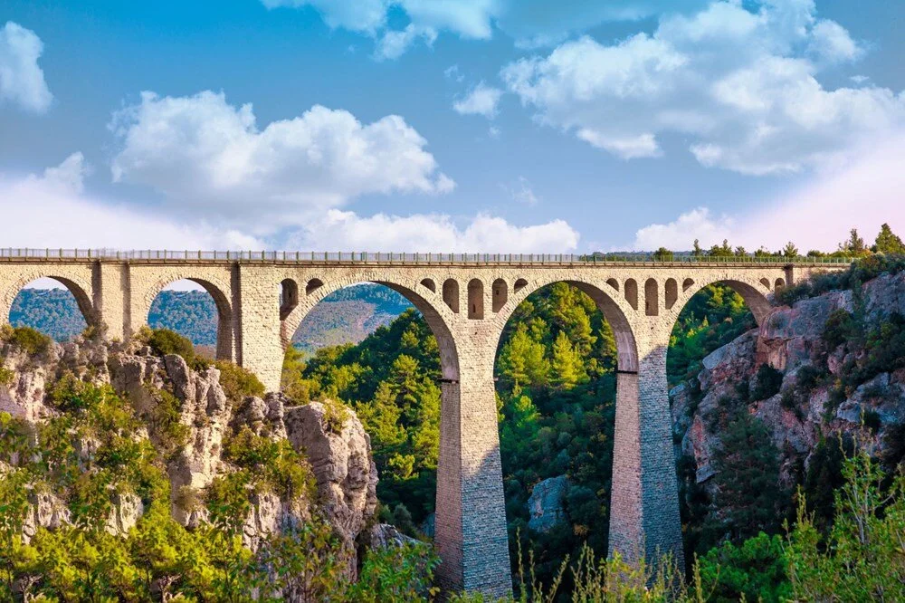

ADANA
Toros Dağları'nın eteklerinde Seyhan ile Ceyhan nehirleri arasında uzanan Adana, unutulmaz bir tatil deneyimi sunuyor. Tarihi zenginlikleri, eşsiz doğa güzellikleri, berrak plajları ve yemyeşil yaylaları ile her dönem ziyaretçi çekiyor. Aynı zamanda Türkiye'nin en lezzetli mutfaklarından birine ev sahipliği yapan bir gastronomi cenneti diyebiliriz.
Adana’da benzersiz bir tatil geçirmeniz için tüm detayları sizin için derledik.
Adana'nın Genel Özellikleri
Adana Toros daglarinin güneyinde yer alan Çukurova'da Seyhan nehri üzerinde kurulmustur. Akdeniz’e yaklasik 160 km'lik kiyisi bulunan Adana Avrupa'yi, Asya'ya baglayan önemli ulaşım yolları üzerindedir.
Seyhan ve Ceyhan nehirlerinin deltasında verimli sulak arazide kurulu Adana'nin tarihi, coğrafi konumu nedeni ile M.Ö. 6000 yillarina uzanmaktadır. Adana, Antik Kilikya Bölgesi'nin en önemli şehirlerinden birisidir.
Hititler’den Osmanlı’ya, gelmiş geçmiş birçok medeniyetlerin beşiğidir.
Adını Yunan mitolojisine göre Gök tanrısı Uranus’un oğlu Adanus’dan almıştır.
Bölgede bugüne kadar yapılan arkeolojik araştırmalar kentin binlerce yıllık geçmişe sahip olduğunu göstermiştir. Binlerce yıl değişik medeniyetlere kucak açmış kent, günümüzde de Türkiye’nin hemen hemen her yerinden göç yoluyla gelen insanların yerleşim yeri olmuştur.
Adana hem krom, demir, kurşun, çinko gibi madenler yönünden zengin bir şehrimizdir hem de kentin can damarı bereketli ürünlerin yetiştiği Çukurova’ya sahiptir.
Adana'nın İklimi
Adana, Akdeniz iklim özelliklerini taşır. Yazları sıcak ve kurak, kışları ılık ve yağışlıdır. Bölgede meydana gelen yağışlar, genellikle yamaç yağışları ve gezici hava kütlelerinin karşılaşması ile oluşur.
Ortalama yağış miktarı 625 mm dir. Yılın ortalama 74 günü yağışlı geçer. Yazın havanın nemle yüklü olmasına karşılık, bazı yıllarda hiç yağış düşmediği görülür.
Nüfusu
2022 yılı verilerine göre nüfusu 2.274.106'dır ve bu nüfusla ülkenin en kalabalık yedinci ili konumundadır. Yüzölçümü 13.844 km² 'dir.
İlde km² 'ye 163 kişi düşmektedir.
Adana'da Gezilecek Yerler
- Varda Köprüsü
Adanalı Karaisalı ilçesinde yer alan ve halk arasında Koca Köprü olarak da bilinen Varda Köprüsü, güzelliği ve çarpıcı mimarisiyle hem fotoğrafçılık gezileri hem de doğa yürüyüşlerinin sevilen mola noktalarından biri.
2. Abdülhamid ile dönemin Alman İmparatoru arasında yapılan bir anlaşmayla Alman mühendisler tarafından 1912 yılında inşa edilen köprü, çelik kafes ve taş örme tekniği ile tasarlanmış.İstanbul-Bağdat-Hicaz demiryolu hattının bir parçası olan tarihi Varda Köprüsü, 99 metre yükseklikte ve 172 metre uzunluğa sahip.
İki sarp yamacı birbirine bağlayan ve hala üzerinde tren seferlerinin düzenlendiği köprü, özellikle gün batımlarında trenlerle birlikte sunduğu kartpostal güzelliğindeki manzarası için sıkça ziyaret ediliyor.

BİLİYOR MUYDUNUZ ?:
"James Bond" serisinin "Skyfall" filminin aksiyon sahnelerinin birkaçının bu köprüde çekildiğini biliyor muydunuz?
- Kapıkaya Kanyonu
Hem doğa severlerin hem de macera arayanların Adana'da mutlaka keşfetmesi gereken bir tabiat harikası olan Kapıkaya Kanyonu, Karaisalı ilçesinde Kapıkaya Köyü sınırlarında yer alıyor.
Seyhan Nehri'nin en büyük kollarından biri olan Çakıt Deresi tarafından binlerce yılda kayaların aşındırılması ile oluşan kanyon, sarp kayalar arasından akan buz gibi dereleri, tektonik çöküntüleri ve binlerce yılda şekillenmiş kaya oluşumları ile fotoğrafçılar için de ideal bir gezi alanı.
Doğa yürüyüşlerinin yanı sıra kampçılık, dağ bisikleti turları, kaya tırmanma ve dağcılık gibi onlarca etkinliği yapabileceğiniz Kapıkaya Kanyonu’nun yamaçları, 16 metre yüksekliğindeki köprüler ile birbirine bağlanıyor.
Toplam 20 kilometre uzunluğa sahip kanyonun yaklaşık 7,5 kilometrelik alanı turizme açılmış durumda. Adana'da her saat bulabileceğiniz Kapıkaya Köyü minibüsleri veya rehberli doğa gezileriyle Kapıkaya Kanyonu’nun güzelliğini keşfe çıkabilirsiniz.
ÖNERİMİZ:
Yollar bozuk olduğu için özellikle de Çakıt Deresi’nden sonra yola devam etmek için neredeyse dize gelen sudan yürüyerek geçmek gerekiyor.
Çocuk ve yaşlıların bulunduğu ziyaretçi gruplarının geçişi biraz zorlu olabilir.
- Yerköprü Mesire Alanı
Adana, yaz aylarındaki yüksek sıcaklarıyla ünlü bir şehir ve bu sıcaklardan kaçmak için girebileceğiniz en güzel yeşil alanlardan biri, Karaisalı ilçesine sadece 7 kilometre uzaklıkta bulunan Yerköprü Mesire Alanı.
Adana merkezine de sadece 53 kilometre uzaklıkta yer alan ve minibüslerle kolayca ulaşabileceğiniz Yerköprü dere kenarında kurulmuş balık çiftlikleri, kır bahçeleri, çam ormanları arasındaki çardakları ve yürüyüş yolları ile doğa ile iç içe keyifli bir gün geçirmek için ziyaret edebileceğiniz en popüler yerlerden biridir.
Şehrin kalabalığı ve gürültüsünden uzaklaşmak, derelerde yüzen ördekler ve kazları izlemek, organik ürünlerle hazırlanan köy kahvaltıları veya taze dere balıkları tatmak için Yerköprü Mesire Alanı’na uğramanızı öneririz.
- Anavarza Antik Kenti
Kadirli, Ceyhan ve Kozan ilçelerinin arasında yer alan ve Kilikya bölgesinde inşa edilen en büyük antik kentlerden biri olan Anavarza Antik Kenti etkileyici kalesiyle ünlü. Ne zaman kurulduğu bilinmeyen ama tarihi kaynaklarda Roma İmparatorluğu döneminde var olduğu anlaşılan antik kent Ermenilerden Abbasilere, Selçuklulardan Ramazanoğulları ve Osmanlılara kadar pek çok farklı dönemden izler taşıyor.
Zengin tarihiyle UNESCO Dünya Miras Geçici Listesi’ne de dahil edilen Anavarza Antik Kenti, Çukurova Ovası'nın en yüksek noktalarından birinde, 200 metrelik bir tepede inşa edildiği için yenilemez kent olarak efsaneleşmiş.
Anavarza Kalesi’nin 1500 metre uzunluğundaki burçlarla süslü surlarından benzersiz manzaralar izleyebileceğiniz gezinizde antik hamam, kilise, tiyatro ve kaya mezarlarını da yakından görebilirsiniz.
M.S. 3. yüzyılda inşa edildiği düşünülen deniz tanrıçası Thetis mozaiği ile de ilgi çeken antik kent, çarpıcı manzarasından dolayı fotoğrafçıların da sık ziyaret ettiği yerler arasındadır.
- Ceyhan Nehri
Türkiye'nin en verimli ovalarından biri olan Çukurova'yı besleyen Ceyhan Nehri, 509 kilometre uzunluğuyla Türkiye'nin en büyük nehirlerinden biri.
Ceyhan Nehri 1659 yılında inşa edilen Kurtkulağı Kervansarayı ve etkileyici Yılan Kalesi gibi tarihi hazineleri de ev sahipliği yapıyor.
Nehir kenarında yemyeşil bir alanı kapsayan Kartepe Aslantaş Milli Parkı’nda kamp yapabilir veya doğa yürüyüşlerine çıkabilirsiniz. Yaz aylarında ise Ceyhan Nehri’ni kano ve sandallarla keşfe çıkabilir veya balık avlama turlarına katılarak dinlendirici bir gün geçirebilirsiniz.
Çevresini saran yürüyüş yolları, kır bahçeleri ve mesire alanlarıyla doğada zaman geçirmek isteyenlerin sıkça ziyaret ettiği adreslerdendir.
- Yılan Kalesi
Türkiye'nin en güzel kalelerinden biri olarak gösterilen ve İpek Yolu üzerinde inşa edilen Yılan Kalesi, görkemli mimarisiyle mutlaka görmenizi önerdiğimiz tarihi hazinelerimizden.
Bazı kaynaklarda 1080 yılında Beylik döneminde, bazı kaynaklarda ise Kilikya Ermeni Krallığı döneminde veya Haçlı Seferi sırasında Bizans döneminde yapıldığı öne sürülen kale, Ceyhan ilçesine sadece 13 kilometre uzaklıkta sarp bir tepe üzerinde, bölgeye hakim bir konumda yükseliyor.
Rivayetlere göre mitolojik bir hayvan olan Şahmeran, bu kalede yaşamıştır. Nitekim Seyahatname’ de de kale içinde çok sayıda, hatta sürüler halinde yılanların olduğundan, yılan ısırmasından helak olan kişilerden ve boynuzlu, ensesi tüylü bir yılanın varlığından söz edilir. Bir başka rivayete göre ise kalenin içi sütle beslenen yılanlarla doludur.
Sütle beslenen bu yılanlar, günün birinde sütsüz kalacak ve kaleden çıkıp Misis’e inerek orada yaşayan insanları sokarak öldürecekmiş.
Eski adı Govara (Kovara) olan kaleye, yörede Şahmeran efsanesinin geçtiği yer olarak kabul edilmesinden dolayı, ünlü Türk gezgini Evliya Çelebi 17'nci yüzyılda Şahmeran Kalesi adını vermiştir.
750 metre uzunluğundaki devasa surları, korunaklı iç kalesi, kilisesi, sarnıçları, avluları ile Adana tarih ve kültür gezilerinin önemli adreslerinden biri. Adana’ya gitmişken mutlaka kültür turizmi yapmalıyım diyenlerin uğraması gereken yerlerdendir.
UYARI:
Yazın sıcaklarda yılan çıkabilme ihtimaline karşın dikkatli olunmalıdır.
- Adana Sinema Müzesi
Adana gezilerinizde kesinlikle ziyaret etmeniz gereken en güzel müzelerden biri de 2011 yılında restore edilen klasik bir konakta hizmet veren Adana Sinema Müzesi.
Türkiye'nin en önemli film festivallerinden Altın Koza Film Festivali gibi pek çok önemli etkinliğin ana merkezi olan, yıl boyu sinema gösterimlerinin yanı sıra kültürel ve sanatsal pek çok etkinliğin düzenlendiği müzede sinema atölyeleri ve workshoplara da katılabilirsiniz.
Adana'nın ünlü sinema sanatçılarının balmumu heykelleri, ünlü filmlerin afişleri, filmlerde kullanılan eşyalar ve fotoğraflarla süslü koleksiyonlarıyla da çok ilgi gören Adana Sinema Müzesi Yeşilçam severlere önerebileceğimiz yerlerdendir.
- Adana Ulu Camii
Adana'nın en eski ve görülmeye değer camilerinde tarihi yapılarından biri olan Adana Ulu Camii hem mimari meraklıları hem de tarih ve kültür severler tarafından en çok ziyaret edilen yapılar arasındadır.
Memluk, Selçuklu ve Osmanlı mimari örneklerini bir arada görebileceğiniz etkileyici caminin yapımı, Ramazanoğulları Beyliği döneminde Halil Bey tarafından başlatıldı ve 1541 yılında oğlu Piri Mehmet Paşa tarafından tamamlandı.
Girişindeki devasa ve büyüleyici taş oymalarının yanı sıra Selçuklu dönemi süslemeleri ile Türkiye'nin en güzel camilerinden biri olarak gösterilen Adana Ulu Camii 1998 yılında Sabancı Merkez Camii açılana kadar Adana’nın en büyük camisiydi.
Yüzlerce yıldır hizmet vermeye devam eden cami, özellikle dini bayramlar ve kutsal günlerde binlerce kişi tarafından dolduruluyor. Ulu Cami Külliyesi’nin bir parçası olarak inşa edilen camiyi gezerken medrese, türbe ve sıbyan mektebi gibi farklı bölümleri de inceleyebilirsiniz.
İnanç ve kültür turları ile her yıl binlerce kişi tarafından gezilen Adana Ulu Camii’ye şehir merkezinden kısa bir yürüyüşle veya toplu taşıma araçları ile kolaylıkla gidebilirsiniz.
Adana'da Ne Yemelisiniz?
Tarihi ve kültürü kadar mutfağıyla da keyifli bir seyahat deneyimi sunan Adana, kendine has yemek kültürünü oluştururken ev sahipliği yaptığı birçok medeniyetten de izler taşıyor.
Bu sebeple şehre ait yemeklerde farklı medeniyetlerden izler görmek mümkün.
Farklı lezzetleri kendi damak zevkine uygun olarak birleştirmiş ve günümüze taşımayı başarmış bir mutfak olan Adana mutfağı Batıdan, Yakın Doğudan ve Arap kültüründen esintileri barındırır.
Şehrin yemeklerine özellikle Arap ve Anadolu-Türk mutfağından izler görülüyor.
Sebzelerde, bakliyat türlerinde ve hatta çorbalarda bile et kullanılan bir mutfak olan Adana mutfağı, ete doyacağınız bir tatil vadediyor. Adana’dan, bu lezzetlerin yalnızca birkaçını ise sizin için aşağıda sıraladık.
- Adana Kebap
Şehrin en ünlü yemeği olan Adana kebap zırh olarak isimlendirilen özel bir bıçak ile kıyılmış kuzu etiyle hazırlanır. Kebabın içerisinde kuzunun kuyruk yağı bulunur.
Ustalık gerektiren bir kebap türü olan ve hazırlanması uzun süren Adana kebap yemek için şehirde bulunan kebapçılarını tercih edebilirsiniz. Merkezde ve ilçelerde bulunan kebapçıların neredeyse tamamında bulabileceğiniz bir lezzet olan Adana kebap çoğunlukla bol yeşillik, ayran ya da şalgam ile servis edilir.
- Sıkma
Adana usulü sıkmanın hamuru için un, yaş maya, tuz ve su kullanılır. İç harcında ise lor peyniri, beyaz peynir veya çökelek, domates, maydanoz, yeşil soğan, pul biber ve sıvı yağ kullanılır. Yöre halkının sabah kahvaltıları için en çok tercih ettikleri alternatiflerden biri olan sıkma, pratik bir şekilde hazırlanmasına rağmen oldukça lezzetlidir.
Sıkma lezzetini denemek için yöresel yemekler hazırlayan restoranları tercih edebilirsiniz. Bu restoranlarda sıkma genellikle sacda pişirilir. Sıcak şekilde servis edilen ve çoğunlukla yanında çay içilen sıkma, güne enerjik bir başlangıç yapmanızı sağlar.
- Ciğer Kavurma
Adana usulü ciğer kavurma klasik ciğer kavurmadan daha farklı şekilde hazırlanır. Ciğer kavurma için genellikle kuzu ciğeri kullanılır. Diğer malzemeler kuyruk yağı, soğan, biber salçası ve baharatlardır.
Eğer Adana'yı ziyaret ediyorsanız mutlaka ciğer kavurmasını denemelisiniz.
- Bici Bici
Adana’nın en meşhur tatlısı olan ve ünü dünyaya ulaşmış bici bici, içerisinde nişastalı bir muhallebi olan ve şerbetli şekilde servis edilen tatlıdır.
Adana yaz aylarında çok sıcak olduğu için yöre halkı hazırladıkları yemeklerde kendilerini ferahlatacak farklı alternatiflere ihtiyaç duyar.
Bu alternatiflerden biri olan bici bici soğuk şekilde servis edilir.
Nişasta, su ve şeker bir muhallebi haline getirilir ve donduktan sonra küçük parçalara bölünür. Gül suyu, soğuk su ve şeker ile hazırlanan şerbetin içerisinde parçalara bölünen muhallebiler ilave edilir.
Üzerine pudra şekeri serpilerek servis edilir.
Sıcak yaz günlerinde içerisinde buz da ilave edilir.
Bici biciyi girdiğiniz her sokakta, seyyar satıcılarda bulabilirsiniz. Seyyar satıcılar neredeyse her sokakta bulundukları için bici bici ararken zorlanmazsınız.
- Adana Böreği
Orijinal Adana böreğinin iç harcında beyaz peynir, kaşar peyniri ve eritme peyniri bir arada kullanılır. Eğer yoğun peynir tadından hoşlanıyorsanız mutlaka denemeniz gereken Adana böreği, merkezde ve ilçelerde bulunan börekçilerde bulunabilir.
- Taş Kadayıf
Adana yöresiyle özdeşleşmiş bir tatlı olan taş kadayıf un ve irmik ile hazırlanan, şerbetli ve yoğun bir tatlıdır. Arap mutfağında da kendine yer bulmayı başarmış bir tatlı olan taş kadayıf, ismini dışının sert ve kıtır kıtır olmasından alır.
Yarım ay şeklinde hazırlandığı için bazı yörelerde yassı kadayıf ismi ile de anılır. Genellikle içi kuru yemişle doldurulan ve yağda kızartılarak hazırlanan taş kadayıf, tatlı ihtiyacını başarılı bir şekilde karşılar.